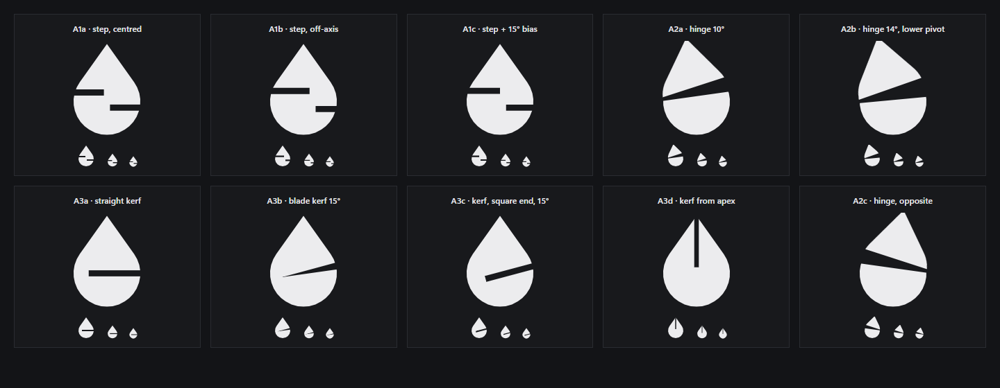
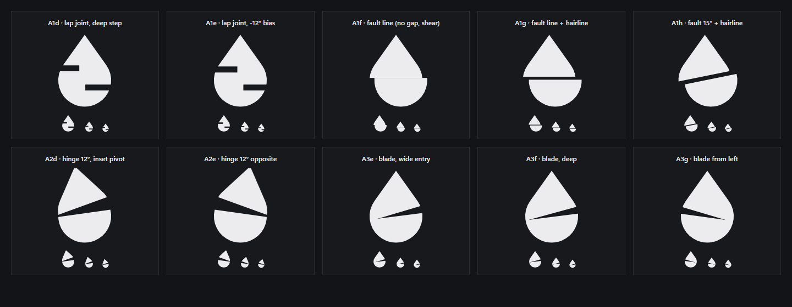
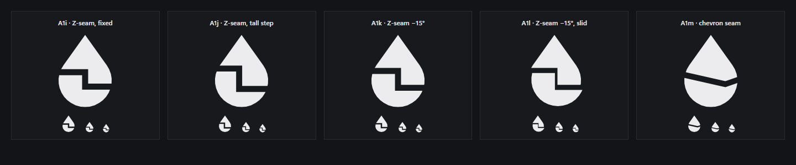

Three evolutions of V3's A, each built around a different kind of break. All share one drop (a circle with tangent lines to the point), so the break alone separates them. Exact vector paths are generated by geometry.cjs, with no clip masks or transforms. Production branding is unchanged.
Master, 256 px, monochrome
Symbol + DropSuite wordmark, dark and light
Application header (18 px symbol, 14 px wordmark)
16 · 20 · 24 · 32 · 64 px on dark, with the 16 and 20 px rasters enlarged ×6
16 · 20 · 24 · 32 · 64 px on light
Favicon: light and dark tab strips
Windows: desktop icon 48 px, taskbar 24 px on dark and light
Critical evaluation
How the three were found
Twenty break treatments were probed on the same drop, each judged at 140 px and at 32, 20 and 16 px.

Round 1. The hinge (A2a, A2b) and the tapered blade (A3b) were the breakthroughs. The stepped seams looked broken; that turned out to be a geometry bug, fixed in round 3. The straight kerf read as a coin slot, the square-ended kerf as a slider, and the kerf from the tip as a pen nib.

Round 2. Fault lines with a sheared offset (A1f–A1h) collapsed into "cone over bowl" or into V3's A, so they were rejected. Hinge with an inset pivot (A2d) and the wide-entry blade (A3e) were chosen.

Round 3. With the step geometry fixed, the Z-seam reads as one continuous machined joint (A1i, chosen). The tall step drifts towards a "2", and the chevron seam reads as a smile.